Nexus离线更新中央仓库索引
我们知道 Nexus 可以远程下载和缓存中央仓库索引，但是对于国内用户来说，Nexus 远程更新索引使用的站点位于国外且部分索引文件较大，经常会出现下载速度缓慢或索引文件不完整等情况。下面我们将介绍一种更加快捷可靠的索引更新方式：离线更新中央仓库索引。
离线更新中央仓库索引，顾名思义，就是直接将索引文件下载，然后拷贝至 Nexus 工作目录中，以达到离线更新索引的目的。
离线更新中央仓库索引主要分为以下 3 步：
1. 浏览器访问 https://repo.maven.apache.org/maven2/.index/ ，下载 nexus-maven-repository-index.gz 和 nexus-maven-repository-index.properties 两个文件（一般位于列表的末尾），如图 1 所示。
2. 浏览器访问 http://mvnrepository.com/，搜索 Indexer CLI，选择 Maven :: Indexer CLI，如图 2 所示。
3. 建议选择 5.1.1 版本，如图 3 所示。
4. 在 Indexer CLI » 5.1.1 版本详情页，点击 View All，查看该版本包含的所有文件。
5. 在文件列表中，点击 indexer-cli-5.1.1.jar ，下载该文件，如图 5 所示。
2. 打开命令行窗口，跳转到 index 目录，执行以下命令，解压索引文件。
解压过程大约需要 10 分钟左右，请耐心等待，解压完成后，结果如图 7 所示。
3. 解压完成后，在 index 中会生成一个名为 indexer 的目录，该目录中存放的就是中央仓库离线索引文件，如图 8 所示。
2. 重启 Nexus，在仓库列表中，选中 Central 代理仓库，然后点击 Browse Index 选项卡，结果如图 10 所示。
3. 点击 browse Remote 选项卡，结果如图 11 所示。
4. 对比 Browse Index 和 Browse Remote 中的索引，若两者完全一致，则表示离线索引更新成功。
离线更新中央仓库索引，顾名思义，就是直接将索引文件下载，然后拷贝至 Nexus 工作目录中，以达到离线更新索引的目的。
离线更新中央仓库索引主要分为以下 3 步：
- 文件下载
- 解压
- 更新并验证索引
文件下载
首先，我们需要下载以下 3 个文件：- nexus-maven-repository-index.gz
- nexus-maven-repository-index.properties
- indexer-cli-5.1.1.jar
1. 浏览器访问 https://repo.maven.apache.org/maven2/.index/ ，下载 nexus-maven-repository-index.gz 和 nexus-maven-repository-index.properties 两个文件（一般位于列表的末尾），如图 1 所示。
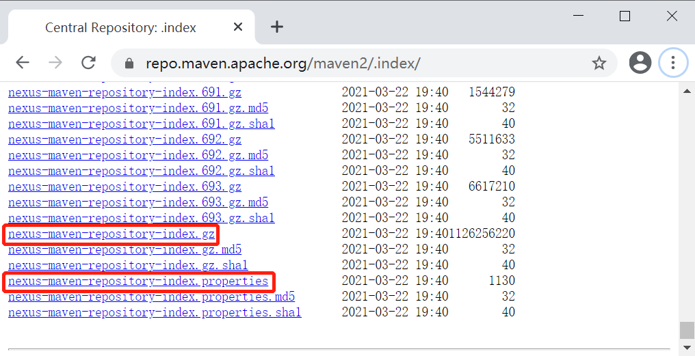
图1：Nexus 中央仓库离线索引下载列表
2. 浏览器访问 http://mvnrepository.com/，搜索 Indexer CLI，选择 Maven :: Indexer CLI，如图 2 所示。
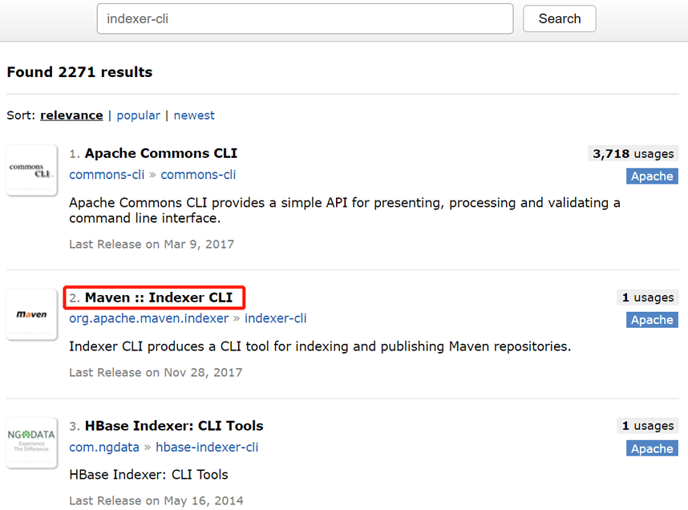
图2：Nexus 索引生成器
3. 建议选择 5.1.1 版本，如图 3 所示。
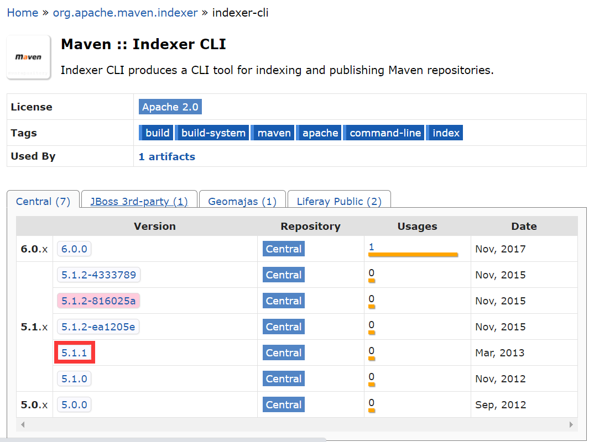
图3：选择 Indexer CLI 版本
4. 在 Indexer CLI » 5.1.1 版本详情页，点击 View All，查看该版本包含的所有文件。
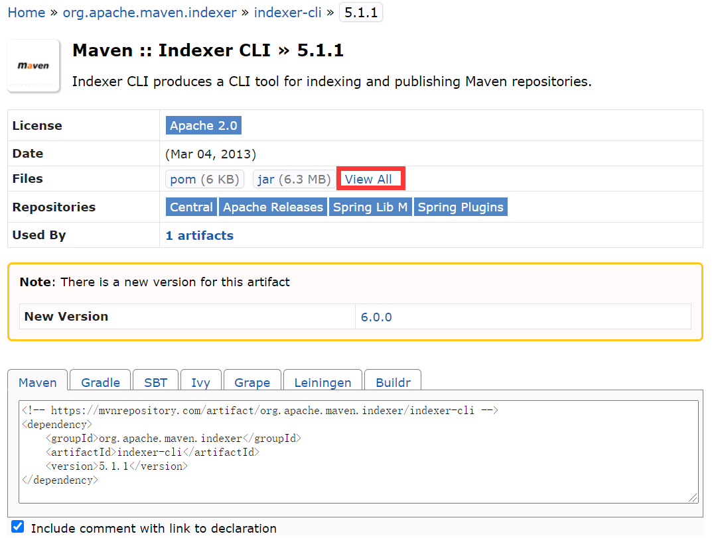
图4：Nexus indexer-cli 5.1.1 详情
5. 在文件列表中，点击 indexer-cli-5.1.1.jar ，下载该文件，如图 5 所示。
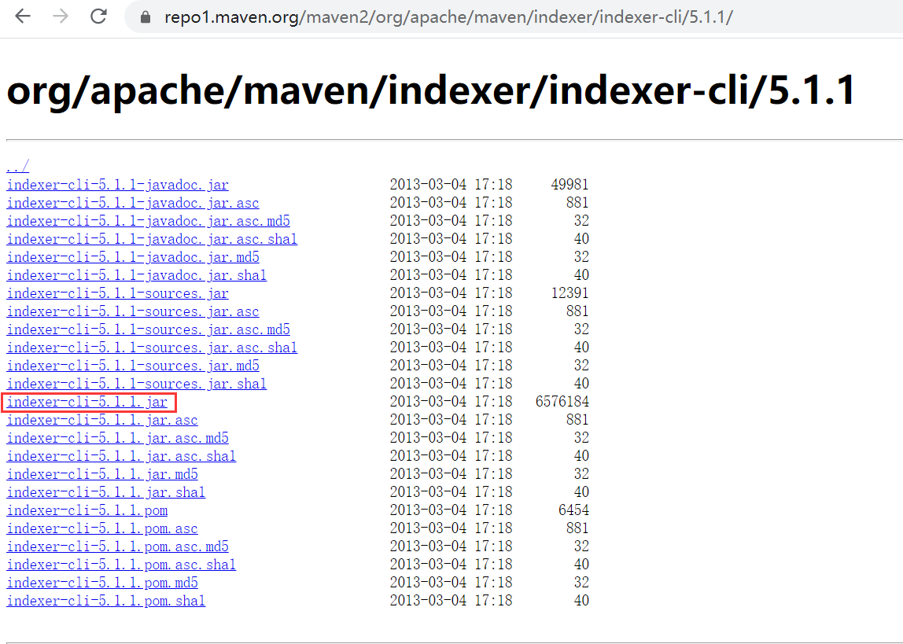
图5：Nexus indexer-cli 文件列表
解压
1. 将 nexus-maven-repository-index.gz 、nexus-maven-repository-index.properties 以及 indexer-cli-5.1.1.jar 三个文件都存放到 index（目录的名称及位置均为自定义，没有特殊规定）目录下，如图 6 所示。
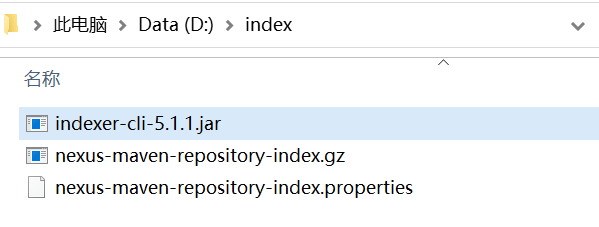
图6：Nexus 中央仓库离线索引文件
2. 打开命令行窗口，跳转到 index 目录，执行以下命令，解压索引文件。
java -jar indexer-cli-5.1.1.jar -u nexus-maven-repository-index.gz -d indexer
解压过程大约需要 10 分钟左右，请耐心等待，解压完成后，结果如图 7 所示。
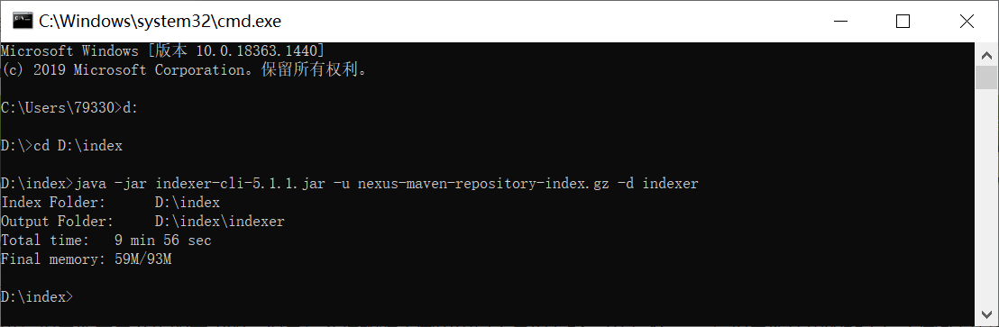
图7：Nexus 中央仓库离线索引解压
3. 解压完成后，在 index 中会生成一个名为 indexer 的目录，该目录中存放的就是中央仓库离线索引文件，如图 8 所示。
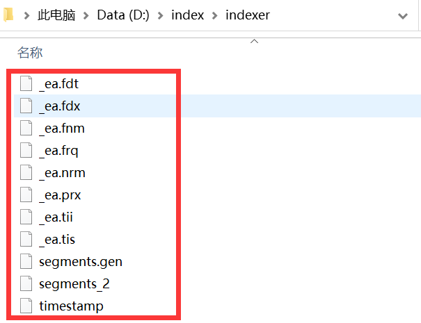
图8：Nexus 离线索引文件
更新并验证索引
1. 将所有索引文件（不包含目录）全部拷贝到“Nexus\sonatype-work\nexus\indexer\central-ctx”目录中，如图 9 所示。
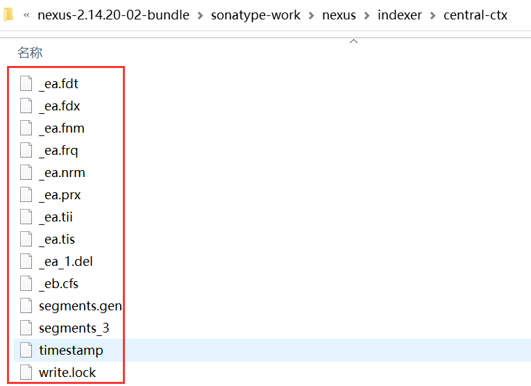
图9：Nexus 中央仓库索引目录
2. 重启 Nexus，在仓库列表中，选中 Central 代理仓库，然后点击 Browse Index 选项卡，结果如图 10 所示。
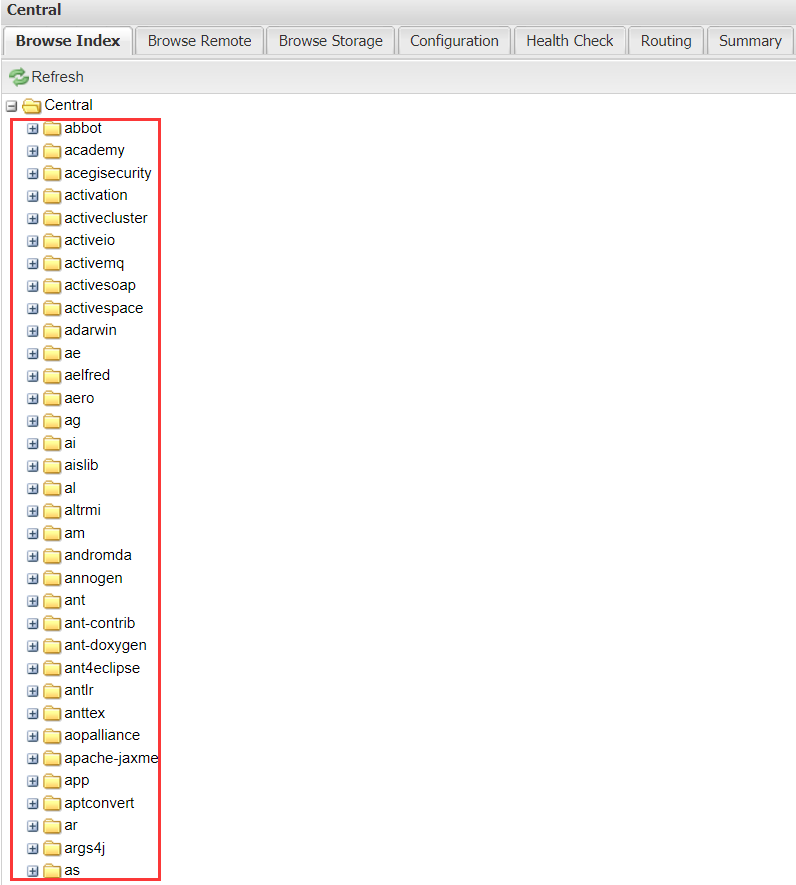
图10：Nexus 离线索引
3. 点击 browse Remote 选项卡，结果如图 11 所示。
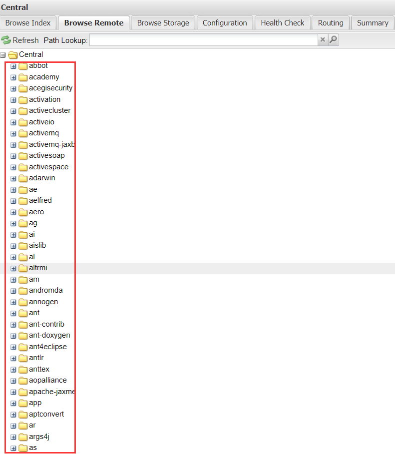
图11：Nexus 远程索引
4. 对比 Browse Index 和 Browse Remote 中的索引，若两者完全一致，则表示离线索引更新成功。
需要注意的是，目前只有 Nexus 2.x 可以通过以上方式离线更新中央仓库索引，Nexus 3.x 暂不支持该功能。若想在 Nexus 3.x 中使用离线索引，我们建议您先在 Nexus 2.x 中离线更新索引后，再将数据迁移到 Nexus 3.x 中。
关注公众号「站长严长生」，在手机上阅读所有教程，随时随地都能学习。内含一款搜索神器，免费下载全网书籍和视频。

微信扫码关注公众号